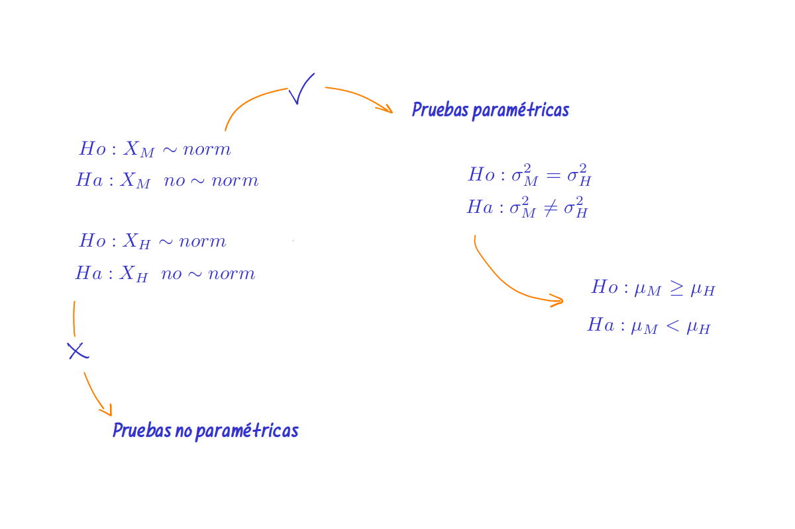

Podemos estar interesado en uno de los tres casos siguientes
| \(Ho\) : \(\mu = \mu_o\) | \(Ho\) : \(\mu \leq \mu_o\) | \(Ho\) : \(\mu \geq \mu_o\) |
| \(Ha\) : \(\mu \neq \mu_o\) | \(Ha\) : \(\mu > \mu_o\) | \(Ha\) : \(\mu < \mu_o\) |
Además se presentan tres alternativas para el estadístico de prueba:
Supuestos:
| X normal |
| Varianza conocida (\(\sigma^{2}=4\)) |
BSDA::z.test(w, mu=60, sigma.x = 125)
One-sample z-Test
data: w
z = 0.82593, p-value = 0.4088
alternative hypothesis: true mean is not equal to 60
95 percent confidence interval:
45.82462 94.82372
sample estimates:
mean of x
70.32417 Supuestos:
| X normal |
| Varianza desconocida |
| \(Ho\) : \(\mu \geq 70\) |
| \(Ha\) : \(\mu < 70\) |
#-------------------------------------------------------------------------------
# Problema 2
t.test(w,mu=70, alternative="less")
One Sample t-test
data: w
t = 0.29153, df = 99, p-value = 0.6144
alternative hypothesis: true mean is less than 70
95 percent confidence interval:
-Inf 72.17041
sample estimates:
mean of x
70.32417 En este caso suponemos que \(n\) es grande
| \(Ho\) : \(p_{_{M}} \leq 0.50\) |
| \(Ha\) : \(p_{_{M}} > 0.50\) |
#-------------------------------------------------------------------------------
t1=table(CarreraLuz22$sex)
prop.test(t1[1],length(CarreraLuz22$sex),0.50,alternative="greater")
1-sample proportions test with continuity correction
data: t1[1] out of length(CarreraLuz22$sex), null probability 0.5
X-squared = 97.549, df = 1, p-value < 2.2e-16
alternative hypothesis: true p is greater than 0.5
95 percent confidence interval:
0.5942197 1.0000000
sample estimates:
p
0.6129032 El resultado indica que la mayoría de los participantes son hombres
Previamente a realizar la comparación de medias se deben realizar las pruebas de normalidad para cada una de las variables, en caso de asumir que las variables tienen distribución normal, se procede a comparar las varianzas de los dos grupos y dependiendo el resultado obtenido se procede a realizar la comparación de medias. en caso de no obtener normalidad o de que las variables procedan de mediciones a través de test en escalas de intercalo (caso de mediciones de clima laboral, nivel de estrés, percepciones, entre otros) o de poseer pocos datos se recomienda emplear métodos no paramétricos.

Figura 4.47 Secuencia para la realización de una prueba de comparación de medias, grupos independientes# xM1=sample(CarreraLuz22M$timerun/60, 100)
# xF1=sample(CarreraLuz22F$timerun/60, 100)
shapiro.test(xM1) # validación de normalidad tiempo hombre
Shapiro-Wilk normality test
data: xM1
W = 0.99075, p-value = 0.725shapiro.test(xF1) # validación de normalidad tiempo mujeres
Shapiro-Wilk normality test
data: xF1
W = 0.99111, p-value = 0.7535var.test(xM1,xF1) # comparación de varianzas
F test to compare two variances
data: xM1 and xF1
F = 1.0403, num df = 99, denom df = 99, p-value = 0.8447
alternative hypothesis: true ratio of variances is not equal to 1
95 percent confidence interval:
0.6999399 1.5460907
sample estimates:
ratio of variances
1.040274 t.test(xM1, xF1, alternative = "less") # comparación de medias
Welch Two Sample t-test
data: xM1 and xF1
t = -4.3355, df = 197.92, p-value = 1.157e-05
alternative hypothesis: true difference in means is less than 0
95 percent confidence interval:
-Inf -4.269767
sample estimates:
mean of x mean of y
63.38167 70.28150 Los resultado indican :
#---------------------------------------------------------------------------------
t1=table(CarreraLuz22M$categoria)
t2=table(CarreraLuz22F$categoria)
prop.test(c(t1[2], t2[2]),c(sum(t1), sum(t2)) )
2-sample test for equality of proportions with continuity correction
data: c(t1[2], t2[2]) out of c(sum(t1), sum(t2))
X-squared = 18.821, df = 1, p-value = 1.436e-05
alternative hypothesis: two.sided
95 percent confidence interval:
-0.14505912 -0.05499747
sample estimates:
prop 1 prop 2
0.5747029 0.6747312 El resultado indica que existen diferencias entre las proporciones de hombre y mujeres en la categoría abierta
Ahora supongamos que un grupo de atletas corrió tambien en el 2021 (\(xMa\)) y repitió su participación en el 2022 (\(xMd\)), se desea determinar si se presentaron mejoras o no en el rendimiento del grupo
| \(Ho\) : \(\mu_{_{M_{antes}}} = \mu_{_{M_{despues}}}\) |
| \(Ho\) : \(\mu_{_{M_{antes}}} \neq \mu_{_{M_{despues}}}\) |
#-----------------------------------------------------------------------------------
t.test(xMa,xMd,paired = TRUE)
Paired t-test
data: xMa and xMd
t = 0.80513, df = 99, p-value = 0.4227
alternative hypothesis: true mean difference is not equal to 0
95 percent confidence interval:
-1.970666 4.661998
sample estimates:
mean difference
1.345666 Los resultados indican que los promedios se suponen iguales
| Pruebas paramétricas | |
| Entrada de datos | |
x1=c(7, 13, 6, 5, 5, 10, 8, 6, 7) |
|
x2=c(3,7,2,3,6,2,1,0,2) |
|
| Una población | |
z.test(datos,mu=10,stdev=4, conf.level=0.98) |
|
t.test(datos, mu=10,conf.level=0.98) |
|
t.test(datos, mu=10,conf.level=0.98,alternative="greater") |
|
t.test(datos, mu=10,conf.level=0.98,alternative="less) |
|
prop.test(x=22,n=100, p=0.20, conf.level=0.98) |
|
| Dos poblaciones | |
t.test(x1,x2, paired=TRUE) |
|
t.test(x1,x2, paired=FALSE, var.equal=TRUE, conf.level=0.95) |
|
t.test(x1,x2, paired=FALSE, var.equal=FALSE, conf.level=0.98) |
|
var.test(x,y) |
|
prop.test(c(x1,x2), c(n1,n2)) |